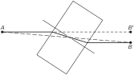
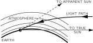
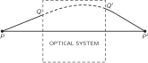
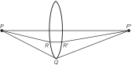
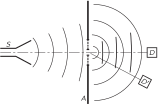

26. Optics: The Principle of Least Time
26–1 Light#
This is the first of a number of chapters on the subject of electromagnetic radiation. Light, with which we see, is only one small part of a vast spectrum of the same kind of thing, the various parts of this spectrum being distinguished by different values of a certain quantity which varies. This variable quantity could be called the “wavelength.” As it varies in the visible spectrum, the light apparently changes color from red to violet. If we explore the spectrum systematically, from long wavelengths toward shorter ones, we would begin with what are usually called radiowaves. Radiowaves are technically available in a wide range of wavelengths, some even longer than those used in regular broadcasts; regular broadcasts have wavelengths corresponding to about 500 meters. Then there are the so-called “short waves,” i.e., radar waves, millimeter waves, and so on. There are no actual boundaries between one range of wavelengths and another, because nature did not present us with sharp edges. The number associated with a given name for the waves are only approximate and, of course, so are the names we give to the different ranges.
Then, a long way down through the millimeter waves, we come to what we call the infrared, and thence to the visible spectrum. Then going in the other direction, we get into a region which is called the ultraviolet. Where the ultraviolet stops, the x-rays begin, but we cannot define precisely where this is; it is roughly at 10^{-8} m, or 10^{-2} \mu m. These are “soft” x-rays; then there are ordinary x-rays and very hard x-rays; then \gamma -rays, and so on, for smaller and smaller values of this dimension called the wavelength.
Within this vast range of wavelengths, there are three or more regions of approximation which are especially interesting. In one of these, a condition exists in which the wavelengths involved are very small compared with the dimensions of the equipment available for their study; furthermore, the photon energies, using the quantum theory, are small compared with the energy sensitivity of the equipment. Under these conditions we can make a rough first approximation by a method called geometrical optics. If, on the other hand, the wavelengths are comparable to the dimensions of the equipment, which is difficult to arrange with visible light but easier with radiowaves, and if the photon energies are still negligibly small, then a very useful approximation can be made by studying the behavior of the waves, still disregarding the quantum mechanics. This method is based on the classical theory of electromagnetic radiation, which will be discussed in a later chapter. Next, if we go to very short wavelengths, where we can disregard the wave character but the photons have a very large energy compared with the sensitivity of our equipment, things get simple again. This is the simple photon picture, which we will describe only very roughly. The complete picture, which unifies the whole thing into one model, will not be available to us for a long time.
In this chapter our discussion is limited to the geometrical optics region, in which we forget about the wavelength and the photon character of the light, which will all be explained in due time. We do not even bother to say what the light is, but just find out how it behaves on a large scale compared with the dimensions of interest. All this must be said in order to emphasize the fact that what we are going to talk about is only a very crude approximation; this is one of the chapters that we shall have to “unlearn” again. But we shall very quickly unlearn it, because we shall almost immediately go on to a more accurate method.
Although geometrical optics is just an approximation, it is of very great importance technically and of great interest historically. We shall present this subject more historically than some of the others in order to give some idea of the development of a physical theory or physical idea.
First, light is, of course, familiar to everybody, and has been familiar since time immemorial. Now one problem is, by what process do we see light? There have been many theories, but it finally settled down to one, which is that there is something which enters the eye—which bounces off objects into the eye. We have heard that idea so long that we accept it, and it is almost impossible for us to realize that very intelligent men have proposed contrary theories—that something comes out of the eye and feels for the object, for example. Some other important observations are that, as light goes from one place to another, it goes in straight lines, if there is nothing in the way, and that the rays do not seem to interfere with one another. That is, light is crisscrossing in all directions in the room, but the light that is passing across our line of vision does not affect the light that comes to us from some object. This was once a most powerful argument against the corpuscular theory; it was used by Huygens. If light were like a lot of arrows shooting along, how could other arrows go through them so easily? Such philosophical arguments are not of much weight. One could always say that light is made up of arrows which go through each other!
26–2 Reflection and refraction#
The discussion above gives enough of the basic idea of geometrical optics—now we have to go a little further into the quantitative features. Thus far we have light going only in straight lines between two points; now let us study the behavior of light when it hits various materials. The simplest object is a mirror, and the law for a mirror is that when the light hits the mirror, it does not continue in a straight line, but bounces off the mirror into a new straight line, which changes when we change the inclination of the mirror. The question for the ancients was, what is the relation between the two angles involved? This is a very simple relation, discovered long ago. The light striking a mirror travels in such a way that the two angles, between each beam and the mirror, are equal. For some reason it is customary to measure the angles from the normal to the mirror surface. Thus the so-called law of reflection is
That is a simple enough proposition, but a more difficult problem is encountered when light goes from one medium into another, for example from air into water; here also, we see that it does not go in a straight line. In the water the ray is at an inclination to its path in the air; if we change the angle \theta_i so that it comes down more nearly vertically, then the angle of “breakage” is not as great. But if we tilt the beam of light at quite an angle, then the deviation angle is very large. The question is, what is the relation of one angle to the other? This also puzzled the ancients for a long time, and here they never found the answer! It is, however, one of the few places in all of Greek physics that one may find any experimental results listed. Claudius Ptolemy made a list of the angle in water for each of a number of different angles in air. Table 26–1 shows the angles in the air, in degrees, and the corresponding angle as measured in the water. (Ordinarily it is said that Greek scientists never did any experiments. But it would be impossible to obtain this table of values without knowing the right law, except by experiment. It should be noted, however, that these do not represent independent careful measurements for each angle but only some numbers interpolated from a few measurements, for they all fit perfectly on a parabola.)
| Angle in air | Angle in water |
| 10^\circ | \phantom{1}8^\circ |
| 20^\circ | 15 - 1/2^\circ |
| 30^\circ | 22 - 1/2^\circ |
| 40^\circ | 29^\circ |
| 50^\circ | 35^\circ |
| 60^\circ | 40 - 1/2^\circ |
| 70^\circ | 45 - 1/2^\circ |
| 80^\circ | 50^\circ |
This, then, is one of the important steps in the development of physical law: first we observe an effect, then we measure it and list it in a table; then we try to find the rule by which one thing can be connected with another. The above numerical table was made in 140 a.d., but it was not until 1621 that someone finally found the rule connecting the two angles! The rule, found by Willebrord Snell, a Dutch mathematician, is as follows: if \theta_i is the angle in air and \theta_r is the angle in the water, then it turns out that the sine of \theta_i is equal to some constant multiple of the sine of \theta_r:
For water the number n is approximately 1.33. Equation ( 26.2) is called Snell’s law; it permits us to predict how the light is going to bend when it goes from air into water. Table 26–2 shows the angles in air and in water according to Snell’s law. Note the remarkable agreement with Ptolemy’s list.
| Angle in air | Angle in water |
| 10^\circ | \phantom{1}7 - 1/2^\circ |
| 20^\circ | 15^\circ |
| 30^\circ | 22^\circ |
| 40^\circ | 29^\circ |
| 50^\circ | 35^\circ |
| 60^\circ | 40 - 1/2^\circ |
| 70^\circ | 45^\circ |
| 80^\circ | 48^\circ |
26–3 Fermat’s principle of least time#
Now in the further development of science, we want more than just a formula. First we have an observation, then we have numbers that we measure, then we have a law which summarizes all the numbers. But the real glory of science is that we can find a way of thinking such that the law is evident.
The first way of thinking that made the law about the behavior of light evident was discovered by Fermat in about 1650, and it is called the principle of least time, or Fermat’s principle. His idea is this: that out of all possible paths that it might take to get from one point to another, light takes the path which requires the shortest time.
Let us first show that this is true for the case of the mirror, that this simple principle contains both the law of straight-line propagation and the law for the mirror. So, we are growing in our understanding! Let us try to find the solution to the following problem. In Fig. 26–3 are shown two points, A and B, and a plane mirror, MM'. What is the way to get from A to B in the shortest time? The answer is to go straight from A to B! But if we add the extra rule that the light has to strike the mirror and come back in the shortest time, the answer is not so easy. One way would be to go as quickly as possible to the mirror and then go to B, on the path ADB. Of course, we then have a long path DB. If we move over a little to the right, to E, we slightly increase the first distance, but we greatly decrease the second one, and so the total path length, and therefore the travel time, is less. How can we find the point C for which the time is the shortest? We can find it very nicely by a geometrical trick.
We construct on the other side of MM' an artificial point B', which is the same distance below the plane MM' as the point B is above the plane. Then we draw the line EB'. Now because BFM is a right angle and BF = FB', EB is equal to EB'. Therefore the sum of the two distances, AE + EB, which is proportional to the time it will take if the light travels with constant velocity, is also the sum of the two lengths AE + EB'. Therefore the problem becomes, when is the sum of these two lengths the least? The answer is easy: when the line goes through point C as a straight line from A to B'! In other words, we have to find the point where we go toward the artificial point, and that will be the correct one. Now if ACB' is a straight line, then angle BCF is equal to angle B'CF and thence to angle ACM. Thus the statement that the angle of incidence equals the angle of reflection is equivalent to the statement that the light goes to the mirror in such a way that it comes back to the point B in the least possible time. Originally, the statement was made by Hero of Alexandria that the light travels in such a way that it goes to the mirror and to the other point in the shortest possible distance, so it is not a modern theory. It was this that inspired Fermat to suggest to himself that perhaps refraction operated on a similar basis. But for refraction, light obviously does not use the path of shortest distance, so Fermat tried the idea that it takes the shortest time.
Before we go on to analyze refraction, we should make one more remark about the mirror. If we have a source of light at the point B and it sends light toward the mirror, then we see that the light which goes to A from the point B comes to A in exactly the same manner as it would have come to A if there were an object at B', and no mirror. Now of course the eye detects only the light which enters it physically, so if we have an object at B and a mirror which makes the light come into the eye in exactly the same manner as it would have come into the eye if the object were at B', then the eye-brain system interprets that, assuming it does not know too much, as being an object at B'. So the illusion that there is an object behind the mirror is merely due to the fact that the light which is entering the eye is entering in exactly the same manner, physically, as it would have entered had there been an object back there (except for the dirt on the mirror, and our knowledge of the existence of the mirror, and so on, which is corrected in the brain).
Now let us demonstrate that the principle of least time will give Snell’s law of refraction. We must, however, make an assumption about the speed of light in water. We shall assume that the speed of light in water is lower than the speed of light in air by a certain factor, n.
In Fig. 26–4, our problem is again to go from A to B in the shortest time. To illustrate that the best thing to do is not just to go in a straight line, let us imagine that a beautiful girl has fallen out of a boat, and she is screaming for help in the water at point B. The line marked x is the shoreline. We are at point A on land, and we see the accident, and we can run and can also swim. But we can run faster than we can swim. What do we do? Do we go in a straight line? (Yes, no doubt!) However, by using a little more intelligence we would realize that it would be advantageous to travel a little greater distance on land in order to decrease the distance in the water, because we go so much slower in the water. (Following this line of reasoning out, we would say the right thing to do is to compute very carefully what should be done!) At any rate, let us try to show that the final solution to the problem is the path ACB, and that this path takes the shortest time of all possible ones. If it is the shortest path, that means that if we take any other, it will be longer. So, if we were to plot the time it takes against the position of point X, we would get a curve something like that shown in Fig. 26–5, where point C corresponds to the shortest of all possible times. This means that if we move the point X to points near C, in the first approximation there is essentially no change in time because the slope is zero at the bottom of the curve. So our way of finding the law will be to consider that we move the place by a very small amount, and to demand that there be essentially no change in time. (Of course there is an infinitesimal change of a second order; we ought to have a positive increase for displacements in either direction from C.) So we consider a nearby point X and we calculate how long it would take to go from A to B by the two paths, and compare the new path with the old path. It is very easy to do. We want the difference, of course, to be nearly zero if the distance XC is short. First, look at the path on land. If we draw a perpendicular XE, we see that this path is shortened by the amount EC. Let us say we gain by not having to go that extra distance. On the other hand, in the water, by drawing a corresponding perpendicular, CF, we find that we have to go the extra distance XF, and that is what we lose. Or, in time, we gain the time it would have taken to go the distance EC, but we lose the time it would have taken to go the distance XF. Those times must be equal since, in the first approximation, there is to be no change in time. But supposing that in the water the speed is 1/n times as fast as in air, then we must have
Therefore we see that when we have the right point, X\!C\sin E\!X\!C = n\cdot X\!C\sin X\!C\!F or, cancelling the common hypotenuse length XC and noting that
we have
So we see that to get from one point to another in the least time when the ratio of speeds is n, the light should enter at such an angle that the ratio of the sines of the angles \theta_i and \theta_r is the ratio of the speeds in the two media.
26–4 Applications of Fermat’s principle#
Now let us consider some of the interesting consequences of the principle of least time. First is the principle of reciprocity. If to go from A to B we have found the path of the least time, then to go in the opposite direction (assuming that light goes at the same speed in any direction), the shortest time will be the same path, and therefore, if light can be sent one way, it can be sent the other way.

An example of interest is a glass block with plane parallel faces, set at an angle to a light beam. Light, in going through the block from a point A to a point B (Fig. 26–6) does not go through in a straight line, but instead it decreases the time in the block by making the angle in the block less inclined, although it loses a little bit in the air. The beam is simply displaced parallel to itself because the angles in and out are the same.

A third interesting phenomenon is the fact that when we see the sun setting, it is already below the horizon! It does not look as though it is below the horizon, but it is (Fig. 26–7). The earth’s atmosphere is thin at the top and dense at the bottom. Light travels more slowly in air than it does in a vacuum, and so the light of the sun can get to point S beyond the horizon more quickly if, instead of just going in a straight line, it avoids the dense regions where it goes slowly by getting through them at a steeper tilt. When it appears to go below the horizon, it is actually already well below the horizon. Another example of this phenomenon is the mirage that one often sees while driving on hot roads. One sees “water” on the road, but when he gets there, it is as dry as the desert! The phenomenon is the following. What we are really seeing is the sky light “reflected” on the road: light from the sky, heading for the road, can end up in the eye, as shown in Fig. 26–8. Why? The air is very hot just above the road but it is cooler up higher. Hotter air is more expanded than cooler air and is thinner, and this decreases the speed of light less. That is to say, light goes faster in the hot region than in the cool region. Therefore, instead of the light deciding to come in the straightforward way, it also has a least-time path by which it goes into the region where it goes faster for awhile, in order to save time. So, it can go in a curve.
As another important example of the principle of least time, suppose that we would like to arrange a situation where we have all the light that comes out of one point, P, collected back together at another point, P' (Fig. 26–9). That means, of course, that the light can go in a straight line from P to P'. That is all right. But how can we arrange that not only does it go straight, but also so that the light starting out from P toward Q also ends up at P'? We want to bring all the light back to what we call a focus. How? If the light always takes the path of least time, then certainly it should not want to go over all these other paths. The only way that the light can be perfectly satisfied to take several adjacent paths is to make those times exactly equal! Otherwise, it would select the one of least time. Therefore the problem of making a focusing system is merely to arrange a device so that it takes the same time for the light to go on all the different paths!

This is easy to do. Suppose that we had a piece of glass in which light goes slower than it does in the air (Fig. 26–10). Now consider a ray which goes in air in the path PQP'. That is a longer path than from P directly to P' and no doubt takes a longer time. But if we were to insert a piece of glass of just the right thickness (we shall later figure out how thick) it might exactly compensate the excess time that it would take the light to go at an angle! In those circumstances we can arrange that the time the light takes to go straight through is the same as the time it takes to go in the path PQP'. Likewise, if we take a ray PRR'P' which is partly inclined, it is not quite as long as PQP', and we do not have to compensate as much as for the straight one, but we do have to compensate somewhat. We end up with a piece of glass that looks like Fig. 26–10. With this shape, all the light which comes from P will go to P'. This, of course, is well known to us, and we call such a device a converging lens. In the next chapter we shall actually calculate what shape the lens has to have to make a perfect focus.

Take another example: suppose we wish to arrange some mirrors so that the light from P always goes to P' (Fig. 26–11). On any path, it goes to some mirror and comes back, and all times must be equal. Here the light always travels in air, so the time and the distance are proportional. Therefore the statement that all the times are the same is the same as the statement that the total distance is the same. Thus the sum of the two distances r_1 and r_2 must be a constant. An ellipse is that curve which has the property that the sum of the distances from two points is a constant for every point on the ellipse; thus we can be sure that the light from one focus will come to the other.
The same principle works for gathering the light of a star. The great 200 -inch Palomar telescope is built on the following principle. Imagine a star billions of miles away; we would like to cause all the light that comes in to come to a focus. Of course we cannot draw the rays that go all the way up to the star, but we still want to check whether the times are equal. Of course we know that when the various rays have arrived at some plane KK', perpendicular to the rays, all the times in this plane are equal (Fig. 26–12). The rays must then come down to the mirror and proceed toward P' in equal times. That is, we must find a curve which has the property that the sum of the distances XX' + X'P' is a constant, no matter where X is chosen. An easy way to find it is to extend the length of the line XX' down to a plane LL'. Now if we arrange our curve so that A'A'' = A'P', B'B'' = B'P', C'C'' = C'P', and so on, we will have our curve, because then of course, AA' + A'P' = AA' + A'A'' will be constant. Thus our curve is the locus of all points equidistant from a line and a point. Such a curve is called a parabola; the mirror is made in the shape of a parabola.
The above examples illustrate the principle upon which such optical devices can be designed. The exact curves can be calculated using the principle that, to focus perfectly, the travel times must be exactly equal for all light rays, as well as being less than for any other nearby path.
We shall discuss these focusing optical devices further in the next chapter; let us now discuss the further development of the theory. When a new theoretical principle is developed, such as the principle of least time, our first inclination might be to say, “Well, that is very pretty; it is delightful; but the question is, does it help at all in understanding the physics?” Someone may say, “Yes, look at how many things we can now understand!” Another says, “Very well, but I can understand mirrors, too. I need a curve such that every tangent plane makes equal angles with the two rays. I can figure out a lens, too, because every ray that comes to it is bent through an angle given by Snell’s law.” Evidently the statement of least time and the statement that angles are equal on reflection, and that the sines of the angles are proportional on refraction, are the same. So is it merely a philosophical question, or one of beauty? There can be arguments on both sides.
However, the importance of a powerful principle is that it predicts new things.
It is easy to show that there are a number of new things predicted by Fermat’s principle. First, suppose that there are three media, glass, water, and air, and we perform a refraction experiment and measure the index n for one medium against another. Let us call n_{12} the index of air ( 1) against water ( 2); n_{13} the index of air ( 1) against glass ( 3). If we measured water against glass, we should find another index, which we shall call n_{23}. But there is no a priori reason why there should be any connection between n_{12}, n_{13}, and n_{23}. On the other hand, according to the idea of least time, there is a definite relationship. The index n_{12} is the ratio of two things, the speed in air to the speed in water; n_{13} is the ratio of the speed in air to the speed in glass; n_{23} is the ratio of the speed in water to the speed in glass. Therefore we cancel out the air, and get
In other words, we predict that the index for a new pair of materials can be obtained from the indexes of the individual materials, both against air or against vacuum. So if we measure the speed of light in all materials, and from this get a single number for each material, namely its index relative to vacuum, called n_i ( n_1 is the speed in vacuum relative to the speed in air, etc.), then our formula is easy. The index for any two materials i and j is
Using only Snell’s law, there is no basis for a prediction of this kind. 1 But of course this prediction works. The relation ( 26.5) was known very early, and was a very strong argument for the principle of least time.
Another argument for the principle of least time, another prediction, is that if we measure the speed of light in water, it will be lower than in air. This is a prediction of a completely different type. It is a brilliant prediction, because all we have so far measured are angles; here we have a theoretical prediction which is quite different from the observations from which Fermat deduced the idea of least time. It turns out, in fact, that the speed in water is slower than the speed in air, by just the proportion that is needed to get the right index!
26–5 A more precise statement of Fermat’s principle#
Actually, we must make the statement of the principle of least time a little more accurately. It was not stated correctly above. It is incorrectly called the principle of least time and we have gone along with the incorrect description for convenience, but we must now see what the correct statement is. Suppose we had a mirror as in Fig. 26–3. What makes the light think it has to go to the mirror? The path of least time is clearly AB. So some people might say, “Sometimes it is a maximum time.” It is not a maximum time, because certainly a curved path would take a still longer time! The correct statement is the following: a ray going in a certain particular path has the property that if we make a small change (say a one percent shift) in the ray in any manner whatever, say in the location at which it comes to the mirror, or the shape of the curve, or anything, there will be no first-order change in the time; there will be only a second -order change in the time. In other words, the principle is that light takes a path such that there are many other paths nearby which take almost exactly the same time.
The following is another difficulty with the principle of least time, and one which people who do not like this kind of a theory could never stomach. With Snell’s theory we can “understand” light. Light goes along, it sees a surface, it bends because it does something at the surface. The idea of causality, that it goes from one point to another, and another, and so on, is easy to understand. But the principle of least time is a completely different philosophical principle about the way nature works. Instead of saying it is a causal thing, that when we do one thing, something else happens, and so on, it says this: we set up the situation, and light decides which is the shortest time, or the extreme one, and chooses that path. But what does it do, how does it find out? Does it smell the nearby paths, and check them against each other? The answer is, yes, it does, in a way. That is the feature which is, of course, not known in geometrical optics, and which is involved in the idea of wavelength; the wavelength tells us approximately how far away the light must “smell” the path in order to check it. It is hard to demonstrate this fact on a large scale with light, because the wavelengths are so terribly short. But with radiowaves, say 3 -cm waves, the distances over which the radiowaves are checking are larger. If we have a source of radiowaves, a detector, and a slit, as in Fig. 26–13, the rays of course go from S to D because it is a straight line, and if we close down the slit it is all right—they still go. But now if we move the detector aside to D', the waves will not go through the wide slit from S to D', because they check several paths nearby, and say, “No, my friend, those all correspond to different times.” On the other hand, if we prevent the radiation from checking the paths by closing the slit down to a very narrow crack, then there is but one path available, and the radiation takes it! With a narrow slit, more radiation reaches D' than reaches it with a wide slit!

One can do the same thing with light, but it is hard to demonstrate on a large scale. The effect can be seen under the following simple conditions. Find a small, bright light, say an unfrosted bulb in a street light far away or the reflection of the sun in a curved automobile bumper. Then put two fingers in front of one eye, so as to look through the crack, and squeeze the light to zero very gently. You will see that the image of the light, which was a little dot before, becomes quite elongated, and even stretches into a long line. The reason is that the fingers are very close together, and the light which is supposed to come in a straight line is spread out at an angle, so that when it comes into the eye it comes in from several directions. Also you will notice, if you are very careful, side maxima, a lot of fringes along the edges too. Furthermore, the whole thing is colored. All of this will be explained in due time, but for the present it is a demonstration that light does not always go in straight lines, and it is one that is very easily performed.
26–6 How it works#
Finally, we give a very crude view of what actually happens, how the whole thing really works, from what we now believe is the correct, quantum-dynamically accurate viewpoint, but of course only qualitatively described. In following the light from A to B in Fig. 26–3, we find that the light does not seem to be in the form of waves at all. Instead the rays seem to be made up of photons, and they actually produce clicks in a photon counter, if we are using one. The brightness of the light is proportional to the average number of photons that come in per second, and what we calculate is the chance that a photon gets from A to B, say by hitting the mirror. The law for that chance is the following very strange one. Take any path and find the time for that path; then make a complex number, or draw a little complex vector, \rho e^{i\theta}, whose angle \theta is proportional to the time. The number of turns per second is the frequency of the light. Now take another path; it has, for instance, a different time, so the vector for it is turned through a different angle—the angle being always proportional to the time. Take all the available paths and add on a little vector for each one; then the answer is that the chance of arrival of the photon is proportional to the square of the length of the final vector, from the beginning to the end!
Now let us show how this implies the principle of least time for a mirror. We consider all rays, all possible paths ADB, AEB, ACB, etc., in Fig. 26–3. The path ADB makes a certain small contribution, but the next path, AEB, takes a quite different time, so its angle \theta is quite different. Let us say that point C corresponds to minimum time, where if we change the paths the times do not change. So for awhile the times do change, and then they begin to change less and less as we get near point C (Fig. 26–14). So the arrows which we have to add are coming almost exactly at the same angle for awhile near C, and then gradually the time begins to increase again, and the phases go around the other way, and so on. Eventually, we have quite a tight knot. The total probability is the distance from one end to the other, squared. Almost all of that accumulated probability occurs in the region where all the arrows are in the same direction (or in the same phase). All the contributions from the paths which have very different times as we change the path, cancel themselves out by pointing in different directions. That is why, if we hide the extreme parts of the mirror, it still reflects almost exactly the same, because all we did was to take out a piece of the diagram inside the spiral ends, and that makes only a very small change in the light. So this is the relationship between the ultimate picture of photons with a probability of arrival depending on an accumulation of arrows, and the principle of least time.